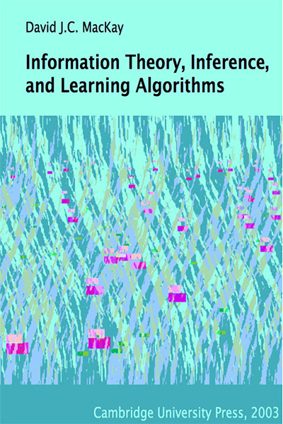

Advanced Machine Learning
01: Introduction
Outline of the lecture
- Introductions
- Why Machine Learning?
- What is machine learning?
- History of ML
- Reinforcement Learning
- Course Overview
Introductions
Instructor
Sergey Plis, Ph.D.
- Department of Computer Science,
- Georgia State University
- 55 Park Place, office 1821
- Office hours: MW 13:15-14:15 but ask anything in slack and by appointment
- Email: splis@gsu.edu

Teaching Assistant
Thanmayee Jetti
- Department of Computer Science,
- Georgia State University
- TBD
- Office hours: by appointment
- Email: tjetti1@student.gsu.edu
Why Machine Learning?
Philosophical reason
Pragmatic reason

brain imaging for brain disorder understanding

lets collect more data at the finest resolution
Problem

high dimensional data is not easy to see through
Desired Solution

automatically extract meaning from data
Desired Solution
automatically extract meaning from data
What is machine learning?
What is learning?
Learning is acquiring new, or modifying existing, knowledge, behaviors, skills, values, or preferences and may involve synthesizing different types of information. The ability to learn is possessed by humans and animals.
Machine Learning
Arthur Samuel (1959). Machine Learning: Field of study that gives computers the ability to learn without being clearly programmed
Machine Learning
Tom Mitchell (1998) Well-posed Learning Problem: A computer program is said to learn from experience E with respect to some task T and some performance measure P, if its performance on T, as measured by P, improves with experience E.
ML as a Scientific Discipline
ML combines
- Discrete Mathematics
- Linear Algebra
- Statistics
- Calculus
- Optimization Theory
ML draws from
- Artificial Intelligence
- Bayesian Methods
- Computational Complexity
- Optimization Theory
- Information theory
- Philosophy
- Psychology and neurobiology
Learning tasks
- Classification
- Regression
- Ranking
- Clustering
- Dimensionality reduction
- Manifold learning
- Causal Learning
Learning Scenarios
- Supervised learning
- Semi-supervised learning
- Active learning
- Online learning
- Unsupervised learning
- Reinforcement learning!
history of ML
extremely brief and biased
1966
Marvin Minsky (MIT, Turing Award 1969) hired a first year undergraduate student and assigned him a problem to solve over the summer: connect a camera to a computer and get the machine to describe what it sees.
ImageNet Challenge
- 14,192,122 million images, 21841 thousand categories
- Image found via web searches for WordNet noun synsets
- Hand verified using Mechanical Turk
- Bounding boxes for query object labeled
- New data for validation and testing each year
50 years later
Perceptron 1958
Stacked perceptrons
Deep Neural Net
Convolutional Neural Network
Recurrent Neural Network
Supervised learning
$(x_i, y_i)$Reinforcement learning
Reinforcement Learning on Atari

DQN on Atari

Results DQN on Atari (2015)

Course Overview
What we'll cover
- Basics of Learning Theory
- Most important (or more advanced) algorithms
- Sprinkled with what the field recently learned on top of the "classical"
ML
- SGD is too powerful to ignore
- Local minima are not as bad
- Bias-variance trade off is an incomplete story
- Reinforcement learning is not dead
Grade Split
- 25% - Homework
- 25% - Midterm exam
- 25% - Final exam
- 25% - Project
Relative Ranking
 Send me your private nicknames ASAP if you have not done so
Send me your private nicknames ASAP if you have not done so
prerequisites
- Ability to program in your favorite language
- Ability to program in python
- Basic knowledge of calculus, linear algebra, optimization theory, probability, and statistics
Textbooks
"Understanding Machine Learning" Shai Shalev-Shwartz and Shai Ben-DavidTextbooks
"Pattern Recognition and ML" C. M. Bishop
Textbooks
"Deep Learning" I. Goodfellow, Y. Bengio, A. Courville
Textbooks
"Information Theory, Inference and Learning Algorithms" David MacKay
Textbooks
"Data Science for Business"The Project!
Lean startup
Anatomy of the project
Milestones
- Submit project ideas each (deadline September 7th)
- Form teams (4-6 people each team) (deadline September 21th)
- Present your team, your problem, and your idea how to solve it (October 5th)
- Submit a report (a paper NeurIPS style) (deadline December 5th)
- Present the project to the class (either 28th or 30th of November)
Deliverables
The project is complete if by December 5th deadline you submit:- NeurIPS style formatted report
- Link to github with the code
- Slides of the final presentation
- Bonus points:
- A link to a kanban board with all tasks and people who completed them
- Kaggle leaderboard of a competition you were a part of for this project
- State of the art result possibly fit for NeurIPS (prize: help with the paper submission)